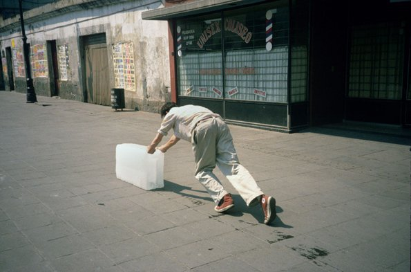
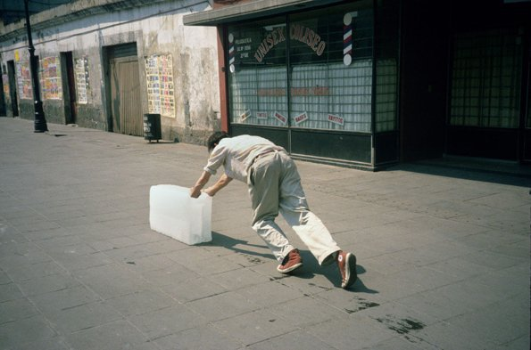

Today is 27.10.2022. Actually today is 26.10.2022, but by the time I am speaking these words to you it is 27.10.2022. I’m a bit late preparing this lecture performance, not in the sense that I started only the day before, but in how I am still working on it. This anxiety-inducing last minute over-editing, the kind that takes over my entire life until the deadline is crossed, is in fact what I’ve been trying to unlearn within my practice. That reminds me: perhaps I should briefly introduce who I am and what I do.
⌘C (14.06.2022) My name is Kirsten Spruit and I work as a designer and media artist. Alongside doing graphic design, coding websites and co-running a radio station, I spend a lot of my time trying to grapple with today’s information overload and high expectations regarding productivity and connectivity. As many experience, it often feels like we constantly need to be “switched on” and “everwhere” all at once, so I aim to create spaces for duration and quiet reflection, and processes that embrace leisurely drifting or challenge what it means to be productive.
⌘V
The past year revolved around a project called How To Save Time, a continuation of my research on “lingering”. How to save time from being governed by capitalist value systems? How to save time that is perceived as being unproductive, wasted, meaningless? How to save time through documentation?
As part of it I have been focussing on developing a method around the act of *essaying*. Well, focussing is a strong word; for most of the year I couldn’t focus at all. Rather I have been walking in circles around this idea of *essaying*, sometimes standing still and looking at it from a distance, sometimes wandering off or away entirely. But always returning. And getting lost again.
Needless to say, I didn’t produce the essay film that I had promised. Not yet. I did do a lot of writing and reflecting. Not so much in the form of an essay, but as fragmented notes. I wonder though what happens if I would somehow weave them together. This is what I would like to test today.
As part of it I have been focussing on developing a method around the act of *essaying*. Well, focussing is a strong word; for most of the year I couldn’t focus at all. Rather I have been walking in circles around this idea of *essaying*, sometimes standing still and looking at it from a distance, sometimes wandering off or away entirely. But always returning. And getting lost again.
Needless to say, I didn’t produce the essay film that I had promised. Not yet. I did do a lot of writing and reflecting. Not so much in the form of an essay, but as fragmented notes. I wonder though what happens if I would somehow weave them together. This is what I would like to test today.
⌘C (18.03.2022) Where to start? This is what I’ve been asking myself for months, and what I ask myself right now. ⌘V
⌘C (02.08.2022) How to start when you’ve already started, started many times before? Started what? A process? An essay film? ⌘V
⌘C (05.10.2022)
“It starts not with Adam and Eve but with what it wants to talk about; it says what occurs to it in that context and stops when it feels finished rather than when there is nothing to say.”
– Adorno, TW. The Essay as Form (1958)
When I googled this quote, the first result lead me to chrismarker.org: a website dedicated to the French writer and documentary film director, as well as writings that relate to his work such as the text by Adorno. Its tagline reads “Notes from the Era of Imperfect Memory”. Marker’s 1983 film Sans Soleil was one of the first examples shown to me within the genre of essay film. The way he decided to start the film always stuck with me:
I go back to the memory of this opening scene when I feel stuck. When I don’t know how to start or move on. ⌘V
When I googled this quote, the first result lead me to chrismarker.org: a website dedicated to the French writer and documentary film director, as well as writings that relate to his work such as the text by Adorno. Its tagline reads “Notes from the Era of Imperfect Memory”. Marker’s 1983 film Sans Soleil was one of the first examples shown to me within the genre of essay film. The way he decided to start the film always stuck with me:
I go back to the memory of this opening scene when I feel stuck. When I don’t know how to start or move on. ⌘V
⌘C (18.05.2022)
It seems like the essay can hold space for struggle, in how it continuously reflects on its own processes. It’s what drew me to the form. ⌘V
⌘C (05.09.2022) “[...] but the essay is not a form, has no form; it is a game that creates its own rules.”
I underlined this quote on page 13 of Brian Dillon’s Essayism. It actually comes from a text written by Michael Hamburger. If the essay has no form, what holds it together? The rules? Should I be creating the rules beforehand or can I change them as I go along? ⌘V
I underlined this quote on page 13 of Brian Dillon’s Essayism. It actually comes from a text written by Michael Hamburger. If the essay has no form, what holds it together? The rules? Should I be creating the rules beforehand or can I change them as I go along? ⌘V
⌘C (13.05.2022)
I wish to be consistent.
⌘V
⌘C (10.12.2021)
Today I said something about Tehching Hsieh, whose work I admire very much, how I actually long for the opposite of what he does. I think. His One Year Performances take over his entire life, for that one year. I think I long for doing work in a way that feels more like it embraces life, makes space for life. Because life sometimes – no often – gets in the way. What I like about his method though is that he has clear rules for what he can do or cannot do. And in the end there is a work, even if only the artefacts (announcement posters, artist statements, contracts, photographs, time-lapse-y documentation etc) remain.
⌘V
⌘C (07.02.2022)
Work gets in the way of life, yet life gets in the way of work.
⌘V
⌘C (25.10.2021)
Boris Groys wrote in Comrades of Time: “It seems to me that the present is initially something that hinders us in our realization of everyday (or non-everyday) projects, something that prevents our smooth transition from the past to the future, something that obstructs us, makes our hopes and plans become not opportune, not up-to-date, or simply impossible to realize. Time and again, we are obliged to say: Yes, it is a good project but at the moment we have no money, no time, no energy, and so forth, to realize it. […] The present is a moment in time when we decide to lower our expectations of the future or to abandon some of the dear traditions of the past in order to pass through the narrow gate of the here-and-now.”
How to tackle that feeling of the present moment being an obstacle, of not being ready yet; of not having obtained enough knowledge on something; of not having the right energy; of being distracted by all the other things I could or should be doing; of doubting whether it will have value or is simply futile – a waste of time? ⌘V
How to tackle that feeling of the present moment being an obstacle, of not being ready yet; of not having obtained enough knowledge on something; of not having the right energy; of being distracted by all the other things I could or should be doing; of doubting whether it will have value or is simply futile – a waste of time? ⌘V
⌘C (02.03.2022)
How to become at ease amidst uncertainty.
⌘V
⌘C (26.10.2021)
The other day as I was strolling through the Klokgebouw during the Dutch Design Week. Only few projects caught my attention. Looking through my phone what remained is a piece of banner from the first installation on the route saying: “The Search — So much time, energy and creativity is wasted in the creative process. The search for a great creative work is at times exhaustive and could lead to nothing. Sometimes the search will take years, but does lead to a masterpiece.”
 Francis Alÿs - Sometimes Making Something Leads to Nothing (1997) ⌘V
 Francis Alÿs - Sometimes Making Something Leads to Nothing (1997) ⌘V
⌘C (16.09.2021)
Essaying supposedly means trying or attempting. Making effort to do something. Aiming or striving for something. It originates from:
“Late 15th century (as a verb in the sense ‘test the quality of’): alteration of assay, by association with Old French essayer, based on late Latin exagium ‘weighing’, from the base of exigere ‘ascertain, weigh’; the noun (late 16th century) is from Old French essai ‘trial’.”
Writing feels like testing the quality of my thinking. To write out and by doing so digest a thought or an idea, pulling the thread to go beyond the thought that usually crosses my mind. ⌘V
“Late 15th century (as a verb in the sense ‘test the quality of’): alteration of assay, by association with Old French essayer, based on late Latin exagium ‘weighing’, from the base of exigere ‘ascertain, weigh’; the noun (late 16th century) is from Old French essai ‘trial’.”
Writing feels like testing the quality of my thinking. To write out and by doing so digest a thought or an idea, pulling the thread to go beyond the thought that usually crosses my mind. ⌘V
⌘C (10.12.2021)
I did a workshop in the KABK in which we did nothing for an hour. A student noted that she is scared of doing nothing because you tend to have to go further into thoughts, further than perhaps is comfortable. That is what happened to me when I got stuck in that James Benning screening so many years ago. I don’t remember exactly what thoughts passed through my brain, but I do remember a fruitful discomfort. I remember thinking about my family a lot. As if a vat of suppressed thoughts had opened. Unpleasant but probably necessary. I feel like jumping to a next paragraph, but perhaps I need to stay with this thought for a bit longer.
⌘V
⌘C (18.02.2022)
I wrote at length about the theme of family. Most of it felt too personal to share though. I’m a little afraid of being too personal. I also wonder whether it is relevant for what I am doing here. Since that is still undefined, I guess I just have to follow my intuition on what feels relevant and what not.
⌘V
⌘C (10.12.2021)
One urge that has come up a lot and does somehow feel relevant is to dive into my grandpa’s archives. He would always document everything, from filming the every move of his grandchildren to writing down what he did and who visited every single day. He would make physical lists of the digital contents of his hard drive, convert Super 8 films and VHS tapes to DVDs. He would draw out calendars by hand, just like I do now. Before he passed away he tried to get rid of a lot of his stuff so “we wouldn’t have to deal with them”. He scanned his yearly agendas and destroyed the physical books, to my disappointment. Because I would like to deal with them.
While he’s not there anymore, my grandma is. While he would always know where to find something back, my grandma’s memory is slowly – no actually quite rapidly – fading. Failing. Especially after my grandpa died. It’s hard to have a conversation with her. She will ask if everything’s going well every other minute.
I feel that maybe now is the time to go through my grandpa’s things, while being around my grandma. While she is still around. I’m not sure what I would be searching for. Perhaps resemblance. Clarification, as if my habits that I so compulsively do would makes more sense. Acceptance? Or perhaps I’m curious to see how it feels to go through someone else’s documentation, especially someone who is not there anymore. What remains of a person. ⌘V
While he’s not there anymore, my grandma is. While he would always know where to find something back, my grandma’s memory is slowly – no actually quite rapidly – fading. Failing. Especially after my grandpa died. It’s hard to have a conversation with her. She will ask if everything’s going well every other minute.
I feel that maybe now is the time to go through my grandpa’s things, while being around my grandma. While she is still around. I’m not sure what I would be searching for. Perhaps resemblance. Clarification, as if my habits that I so compulsively do would makes more sense. Acceptance? Or perhaps I’m curious to see how it feels to go through someone else’s documentation, especially someone who is not there anymore. What remains of a person. ⌘V
⌘C (10.12.2021)
What remains of time being spent. What did I do this last month? I can go through my calendar, in which I tried to log accurately what I did, or my browser search history and the photos, videos and conversations on my phone. I would like to give a detailed explanation why I failed to properly work on my *essaying*. Working properly on it for me would mean to dedicate time to it on a regular basis in a way that is visible. I spend so much time doing invisible labour that I cannot show in the end. That therefore does not feel productive, because there is nothing to reflect back on.
⌘V
⌘C (14.01.2022)
Perhaps it’s good to mention that I’ve not been so great at remembering the things I’ve read and contemplated. At least to articulate these things, especially in moments of pressure. Such a moment can already be a conversation with someone. I am not sure why I feel pressure even when talking to friends? It’s like blacking out in a presentation. Perhaps I haven’t found the best way to process things yet?
⌘V
⌘C (29.07.2022)
“Roland Barthes spoke of his love of, his addiction almost, to note-taking. He had a system of notebooks and note cards, and Latinate names to designate different stages of note-taking: notula was the single word or two quickly recorded in a slim notebook; nota, the later and fuller transcription of this thought onto an index card. When away from his desk he used springactivated ballpoint pens that required no fumbling with a cap, and wore jackets with pockets that would accommodate these tools. He maintained friends who would not question his habit of stopping, mid-walk, mid-sentence, to quickly note a thought.
Barthes: ’When a certain amount of time’s gone by without any note-taking, without my having taken out my notebook, I notice a certain feeling of frustration and aridity. And so each time I get back to note-taking (notatio) it’s like a drug, a refuge, a security. I’d say that the activity of notatio is like a mothering. I return to notatio as to a mother who protects me. Note-taking gives me a form of security.’”
(as mentioned in Index Cards by Moyra Davey) ⌘V
Barthes: ’When a certain amount of time’s gone by without any note-taking, without my having taken out my notebook, I notice a certain feeling of frustration and aridity. And so each time I get back to note-taking (notatio) it’s like a drug, a refuge, a security. I’d say that the activity of notatio is like a mothering. I return to notatio as to a mother who protects me. Note-taking gives me a form of security.’”
(as mentioned in Index Cards by Moyra Davey) ⌘V
⌘C (18.05.2022)
Use the act of note-taking to improve my memory; by writing notes not just in a linear fashion, but also treating them with care afterwards, linking them up together, I will hopefully develop a relationship with the ideas. Hopefully they start to live in my head somewhere.
⌘V
⌘C (14.01.2022)
Last night I was thinking about montage in film and linking up things to create a narrative. I’ve starting reading Byung-Chul Han’s The Scent of Time again, a philosophical essay on the art of lingering. He writes about how the feeling that time rushes by, is beyond being an acceleration of time and more of an atomization. Time is “tearing away”; it is whizzing without direction, without a course, without any meaningful conclusion. He remains very theoretical and abstract here, but somehow his words connect to how I feel in this process, as well as generally in life. A process actually implies a course, a direction. I’ve been feeling very directionless, as I don’t know exactly what I’m doing here. I’m writing down my thoughts. Does placing those thougths next to each other create a process? Perhaps. But only if there are connections between the elements? Or will connections naturally appear?
⌘V
⌘C (26.10.2022)
Dillon writing about Susan Sontag’s “license to write in fragments, to leave out dutiful links.” (in Essayism)
“Sontag treats her notebooks and journals as if they are the places where she can describe the problem to herself but not solve it.”
“The journal was the place she could come apart most productively, if also tormentedly.”
“Writing her diary, composing lists and fragments and aphorisms, may not keep the pain at bay, but it will reassure her, in the years when she feels she is no longer the writer she once was – like many writers.” ⌘V
“Sontag treats her notebooks and journals as if they are the places where she can describe the problem to herself but not solve it.”
“The journal was the place she could come apart most productively, if also tormentedly.”
“Writing her diary, composing lists and fragments and aphorisms, may not keep the pain at bay, but it will reassure her, in the years when she feels she is no longer the writer she once was – like many writers.” ⌘V
⌘C (03.02.2022)
I think essaying, this activity that is supposed be an attempt or trial, an act of making effort to do something, aiming or striving for something, through writing or putting media together, will help me pull out the knots in my thinking while at the same tying my fragmented mind back together.
In all of this writing, I was initially striving to unravel the essence of my project. I keep coming back to my personal struggles though. I keep thinking “I am tired – I don’t want to do anything, please let me rest.” Should I stop working for a few months and try again, or should I find a way of working that feels more natural and less stressful? How to escape, yet still participate? When to work through tension and when to say stop? ⌘V
In all of this writing, I was initially striving to unravel the essence of my project. I keep coming back to my personal struggles though. I keep thinking “I am tired – I don’t want to do anything, please let me rest.” Should I stop working for a few months and try again, or should I find a way of working that feels more natural and less stressful? How to escape, yet still participate? When to work through tension and when to say stop? ⌘V
⌘C (05.10.2022)
“It starts not with Adam and Eve but with what it wants to talk about; it says what occurs to it in that context and stops when it feels finished rather than when there is nothing to say.”
– Adorno, TW. The Essay as Form (1958)
⌘V
Today is 27.10.2022. I’m not sure if I really slept last night, because it seemed like I was still writing in my dreams, trying to come up with a conclusion to this attempt. Maybe I have left you confused, but at least you’d feel what I felt. It is possible to call this an essay? Who knows...
⌘C (26.10.2022)
“...an essay really ought not to be on anything, to deal with anything, to define anything. An essay is a walk, an excursion, not a business trip. So if the title says ‘on’ that can only mean that this essay passes over a certain field - but with no intention of surveying it. This field will not be ploughed or cultivated. It will remain a meadow, wild. One walker is interested in wild flowers, another in the view, a third collects insects. Hunting butterflies is permitted. Everything is permitted - everything except the intentions of surveyors, farmers, speculators. And each walker is allowed to report whatever he happens to have observed about the field - even if that was no more than the birds that flew over it, the clouds that have still less to do with it, or only the transmutations of birds or clouds in his own head. But the person who drove there, sat there inside his car and then says he was there is no essayist. That’s why the essay is an outmoded genre. {‘Form’ is what I almost wrote, but the essay is not a form, has no form; it is a game that creates its own rules.}”
(An Essay on The Essay, M. Hamburger) ⌘V
(An Essay on The Essay, M. Hamburger) ⌘V